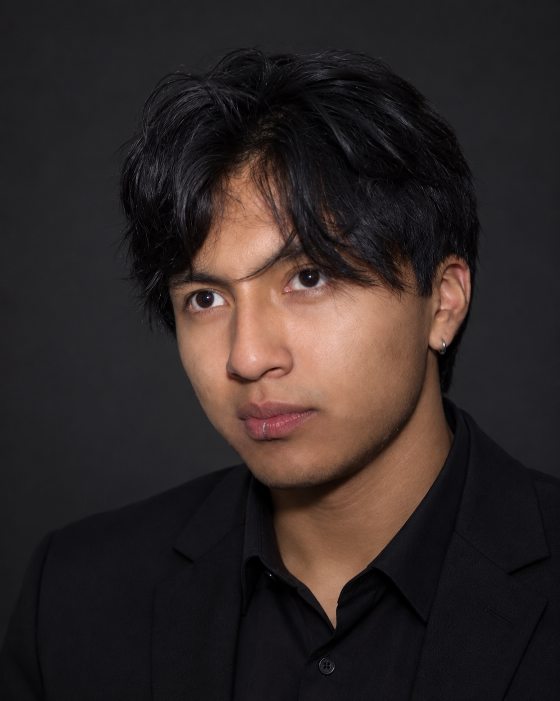

César Zapata
Ingeniería en Ciencias de la Computación · Quito
Desliza para abrir
Hola, soy César.
Estudiante de la Escuela Politécnica Nacional y miembro del Laboratorio de Inteligencia Artificial (LIA).
Construyo sistemas que ven, deciden y se pueden probar: visión por computadora, aprendizaje por refuerzo y software de bajo nivel en Linux. Busco pasantías y posiciones remotas en IA, backend o software.
Proyectos
Ocho trabajos con resultados medibles. Toca uno para ver el detalle.
Trayectoria
Pasante y miembro activo, LIA – EPN
Investigación aplicada en visión por computadora, aprendizaje por refuerzo y prototipos en tiempo real: datos, pipelines y evaluación de modelos.
Ingeniería en Ciencias de la Computación
Escuela Politécnica Nacional, Quito. Cursando el 7.º de 9 semestres.
Instructor de Física y Química
Academia Pre-militar Élite, Quito.
Tutor y entrenador de ajedrez
Matemáticas, Física y Química. Elo FIDE 1667 y exseleccionado de Pichincha.
Inglés académico 4 (B2)
Centro de Educación Continua, EPN.
Herramientas
Python, C, C++, MATLAB, SQL, Perl
PyTorch, U-Net++, TD3, PPO, GNN, scikit-learn, NLP
Linux, sockets y epoll, OpenGL, Perl/Tk, MediaMTX
Git, Docker, TestRail, TAP, Linear